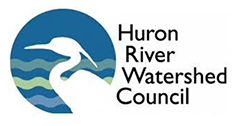
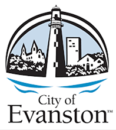

Illustrated Boundary Chain Model
Boundary organizations coproduce climate information by working in the space between the organizations that produce the information (for example, universities) and the organizations that use it to make decisions (for example, city managers). In a boundary chain model, the organizations that use information are connected, not just to producers, but also to each other, like links in a chain. This configuration enables organizations to collaborate to exchange information and customize it to fit their different needs. The diagram below uses the case of the Great Lakes Climate Adaptation Network (GLCAN) to illustrate how organizations collaborated to develop a template to assess climate vulnerability in Great Lakes cities.
Select each link in the chain to learn more about that organization’s role in helping cities adapt to climate change.
Boundary chain diagram
Information flows from Climate Data to GLISA. GLISA passes it to both HRWC and Headwaters Economics, which each pass it to GLCAN. GLCAN shares it with the cities of Cleveland, Evanston, Dearborn, Indianapolis, and Ann Arbor.
-
Climate Data
Historical observations and future projections.
-
GLISA
Great Lakes Integrated Sciences and Assessments (GLISA) climatologists extracted climate information from historical records and global climate models.
-
HRWC

Rebecca Esselman with the Huron River Watershed Council (HRWC) worked with Great Lakes cities to develop the Vulnerability Assessment template and incorporate GLISA’s climate information.
-
Headwaters Economics
Headwaters Economics extracted socioeconomic data from the census and incorporated it into the template.
-
GLCAN
The Great Lakes Climate Adaptation Network (GLCAN) recognized that cities needed information on expected climate impacts and socioeconomic vulnerability. It applied for a grant to develop the Vulnerability Assessment template in 2017.
- Cleveland
-
Evanston

Kumar Jensen, Sustainability Coordinator for the City of Evanston, helped start a Climate Action and Resilience Plan (CARP) working group, made up of 17 community members. The group used the template to identify the city’s vulnerable physical and natural infrastructure.
- Dearborn
-
Indianapolis
Jeff Meek, Sustainability Planner for Indianapolis, drew on projections in the template to argue for including an adaptation strategy in the city’s Sustainability Plan, and to make decisions that improve the city’s resilience.
- Ann Arbor